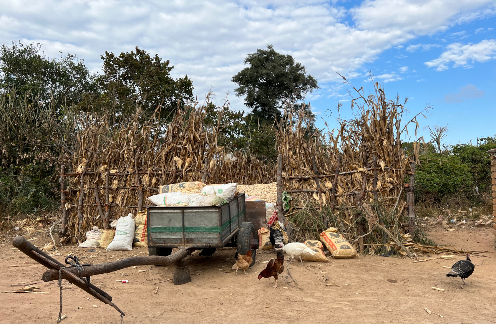
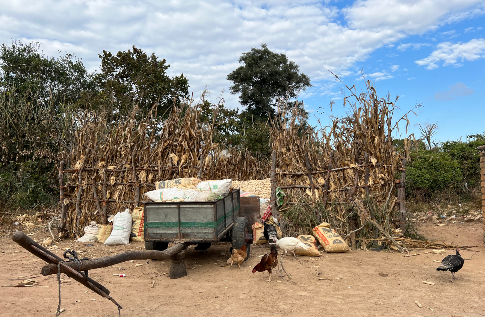
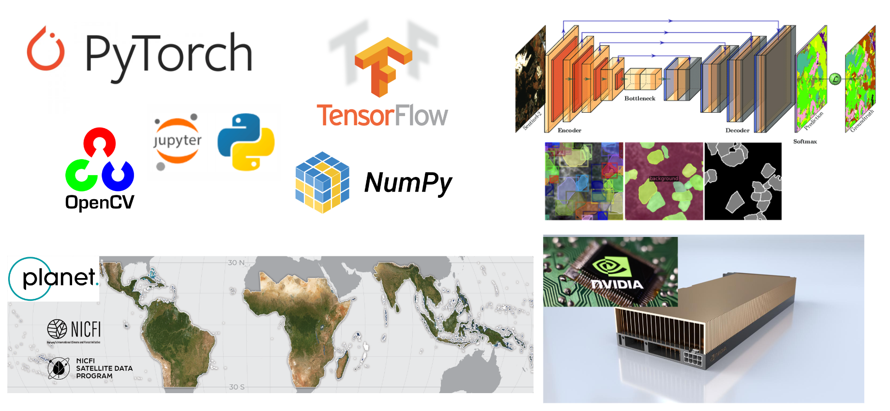
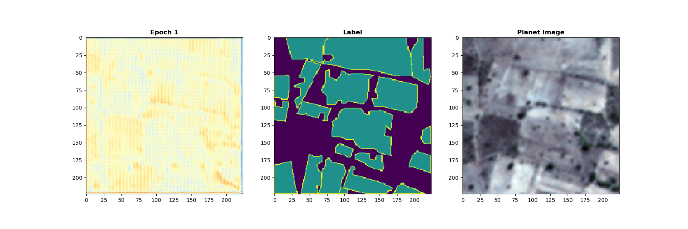
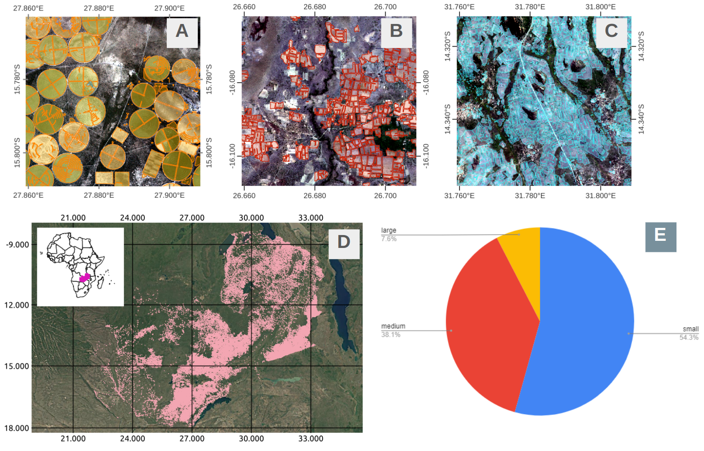
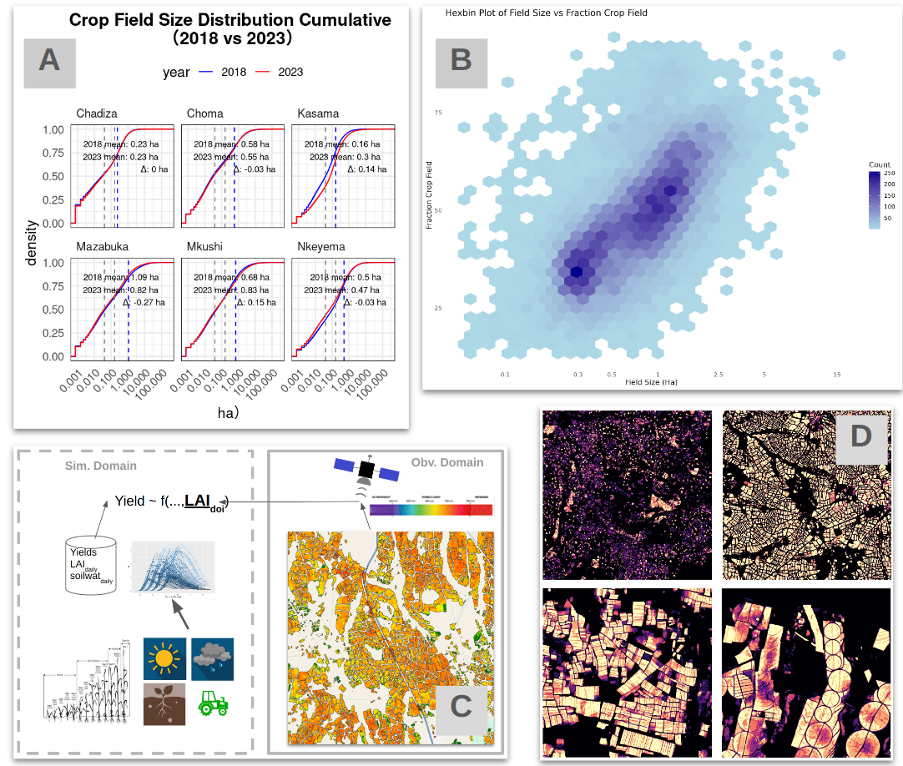

Mapping Every Crop Field on the Ground — A Foundation for Policy and Smart Agriculture
 

Soon, we’ll be able to identify every single crop field on Earth from the sky—from smallholder plots to large commercial center-pivot circles. Detailed field boundary maps play a crucial role in sustainable development planning. Huge efforts have gone into generating these maps, and more institutions are now adopting them for a wide range of uses—from risk assessment and carbon tracking to agricultural surveys and precision farming.
Here, I present how field boundary data can help address food security issues in Zambia, where the rapid expansion of medium-sized farms in the tropical savanna brings new opportunities—along with complex environmental and socioeconomic challenges. This work is funded by NASA and NSF under the supervision of Agroimpact Research Group (AIRG) , where I contributed as a research assistant. For technical details and publications, please visit AIRG. Also acknoelrdge the partnership of Zambia Agriculture Research Institude (ZARI) and
Part 1: How Could Individual Fields Be Identified from Satellite?
We now have more openly archived, high spatial–temporal resolution imagery to cover the world. We have many AI variants that do computer vision tasks better, helping to identify objects in imagery. We have more powerful Graphics Processing Units (GPUs) to boost computation. We also have more labeled datasets, which make it easier to train accurate models. And we now have a growing ecosystem of open-source libraries and programming languages that make geospatial analysis and deep learning more accessible than ever.
*The U-Net architecture in the upper right of the above image is from García Rodríguez, C., Vitrià, J., & Mora, O. (2020). Uncertainty-based human-in-the-loop deep learning for land cover segmentation. Remote Sensing, 12(22), 3836.
As the algorithm (U-Net, in this case) continues training over multiple epochs, the model progressively learns to recognize features of crop fields and can identify similar patterns (blue) in previously unseen imagery.
Part 2: Identify Crop Field Variation size in Zambia
We mapped every crop field in Zambia (D) and used examples of smallholder (A), medium-sized (B), and large commercial farms (C) to illustrate the variation in field sizes. In several land-abundant countries, the typical ratio of small, medium, and large farms is expected to be around 50:40:10 (E), and we anticipate that the share of medium-sized farms in Zambia will continue to expand.
To better describe the spatial patterns of farming scales, we summarized the share of area under small, medium, and large farms within 5×5 km resolution pixels and identified the dominant farming scale for each pixel across the nation. This analysis highlights the following patterns:
- Prevalence of smallholder, shifting agriculture in the northern and northeastern parts of the country, including Northern, Muchinga, and Luapula provinces.
- Concentration of medium and large-scale farms in the Copperbelt and Central provinces, particularly near major highways and infrastructure corridors.
- Additional clusters of medium-sized farms in parts of the northwestern and southwestern regions, reflecting expansion of medium-scale agriculture.
*We used an empirical field size threshold of 2.1 hectares to separate small and medium farms, and a threshold of 12 hectares to separate medium and large farms.
Part 3: The Road Ahead — Yield Monitoring, Field Size Estimation, and Beyond
Having a field boundary map enables a wide range of policy and science-oriented applications. For example, we can monitor changes in field size by district or any administrative unit (A), guide remote sensing efforts to assess field-level NDVI and crop health (C), and explore potential relationships between field size and land use stability (B and D). Panel D shows the degree of overlap in field boundaries across years (2018–2024), which we use as a proxy for land use stability. Our analysis reveals that, in Zambia, larger fields tend to be more stable over time, while smaller fields—often associated with shifting agriculture—exhibit less stability (B, where the y-axis represents stability).
